Avant/après avec témoins (BACI)
L'arasement d'un seuil a-t-il augmenté la densité de jeunes truites ? Un dispositif avant/après avec témoins, du tableau au texte des méthodes et au script R.
Les données sont simulées. Aucun poisson n'a été compté : le tableau a été fabriqué par le script baci.R, avec une graine fixe, pour ce tutoriel. Il contient un effet connu : +6 juvéniles pour 100 m² sur les stations aménagées à partir de 2016.
La question et les données
Le seuil d'un moulin a été arasé pendant l'hiver 2015-2016. Chaque été, de 2010 à 2023, les juvéniles de truite de l'année sont comptés par pêche électrique sur six stations : trois en amont de l'ancien seuil (A1, A2, A3 : l'impact) et trois sur un affluent voisin sans seuil (T1, T2, T3 : les témoins). Les témoins suivent les variations d'une année à l'autre (crues, étés secs) que l'aménagement n'explique pas : c'est l'écart entre impact et témoins, avant et après, qui mesure son effet.
Téléchargez baci_truite.csv (84 lignes, une par station et par année) :
| Colonne | Contenu |
|---|---|
| obs | le nom de la ligne : la station et l'année (A1-2010) |
| station | A1, A2, A3 (en amont du seuil), T1, T2, T3 (affluent témoin) |
| groupe | impact ou témoin |
| annee | 2010 à 2023 |
| densite | juvéniles pour 100 m² ; vide quand la station n'a pas été pêchée (T2 en 2013, A3 en 2019) |
Ouvrez-le avec Fichier › Ouvrir (Ctrl+O) : le projet compte 84 observations et 4 variables (la première colonne nomme les observations).
1. Quelle analyse ?
Modèle › Quelle analyse ? : cochez Avant/après avec des témoins (BACI), puis choisissez la
réponse, densite. Nuée propose le temps (annee) et l'unité (station) d'après leurs noms, et
conseille l'analyse avant/après avec témoins.

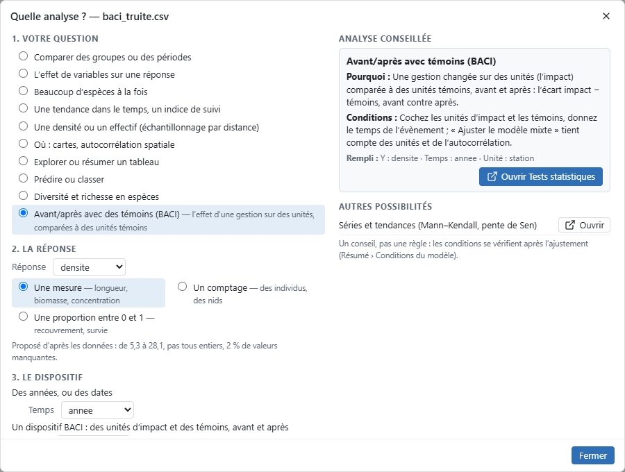

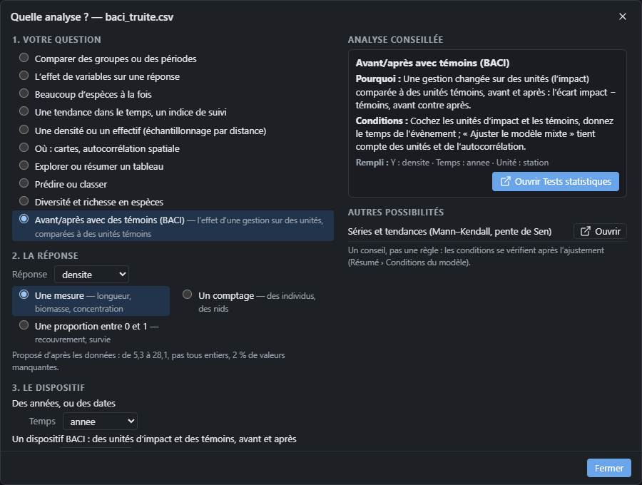
Cliquez sur Ouvrir Tests statistiques : la vue des tests s'ouvre dans son mode Avant/après (BACI), la réponse, le temps et l'unité déjà choisis.
2. L'écart entre impact et témoins
Cochez A1, A2 et A3 sur la ligne Impact, puis tous les autres sur la ligne Témoins.
Tapez l'année du premier « après » dans Événement : 2016.

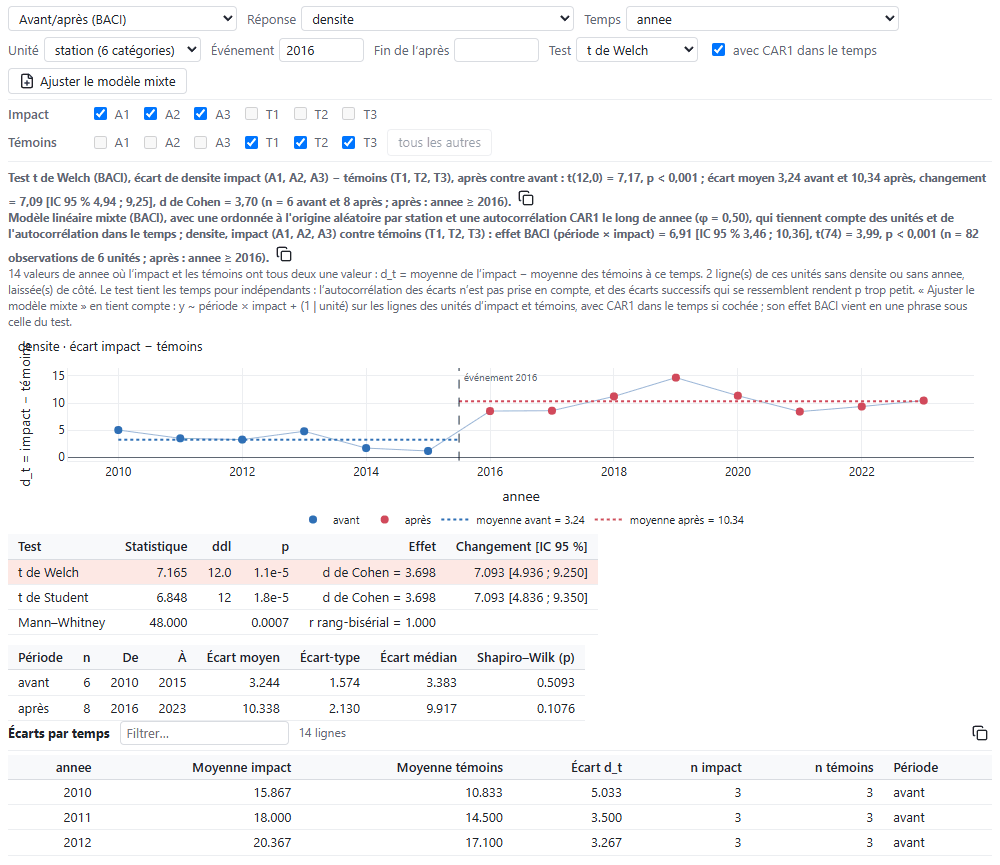

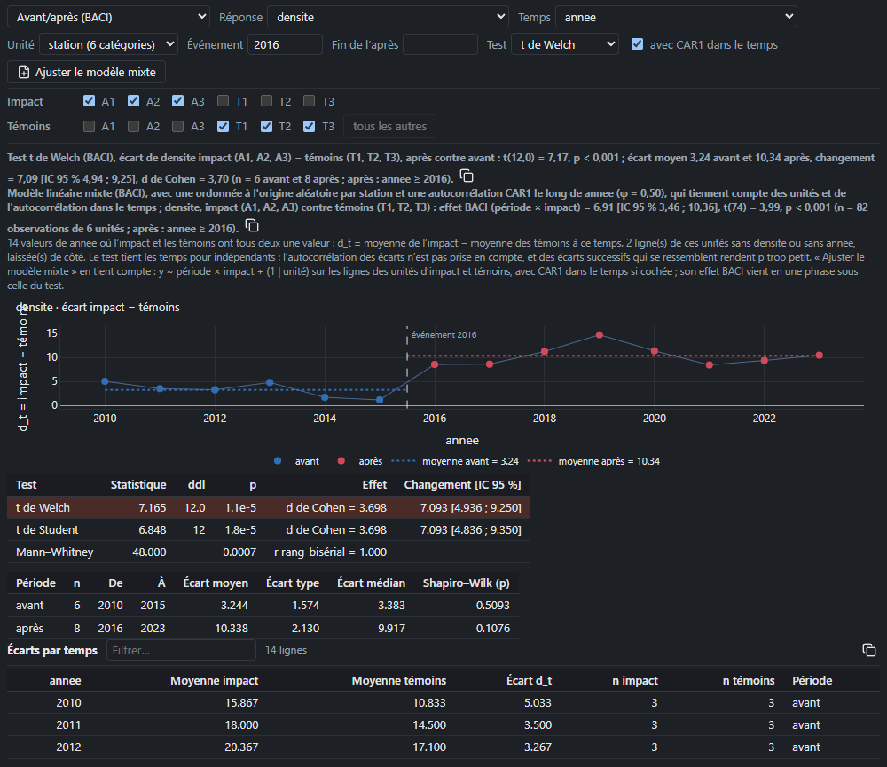
Chaque année, l'écart d_t est la moyenne des stations d'impact moins celle des témoins. Avant l'arasement, l'écart moyen est de 3,24 juvéniles pour 100 m² ; après, de 10,34. Le test de Welch compare les écarts après à ceux d'avant : le changement est de 7,09 [IC 95 % 4,94 ; 9,25], p < 0,001.
Ce test tient les années pour indépendantes. Or des écarts successifs se ressemblent souvent (une bonne année en suit une bonne) : la note sous la phrase le rappelle, et dans ce cas le p est trop petit. Le modèle mixte en tient compte.
3. Le modèle mixte BACI
Avec CAR1 dans le temps est coché (chaque station a au moins trois années). Cliquez sur Ajuster le modèle mixte. Nuée ajoute au projet deux variables valant 0 ou 1 :
- « période BACI (2016) » : 1 à partir de 2016, 0 avant ;
- « impact BACI (A1, A2, A3 contre T1, T2, T3) » : 1 pour les stations d'impact, 0 pour les témoins ;
puis ajuste le modèle linéaire mixte densite ~ période × impact + (1 | station), avec une
ordonnée à l'origine aléatoire par station et une autocorrélation CAR1 le long des années dans
chaque station. Le modèle s'appelle « BACI densite » ; ses vues s'ouvrent. Revenu dans la vue
BACI, son effet vient en phrase sous celle du test (voir l'image ci-dessus) : 6,91
[IC 95 % 3,46 ; 10,36], t(74) = 3,99, p < 0,001, avec φ = 0,50.

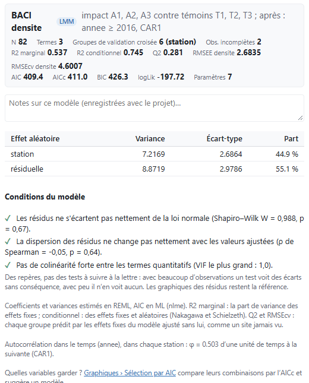

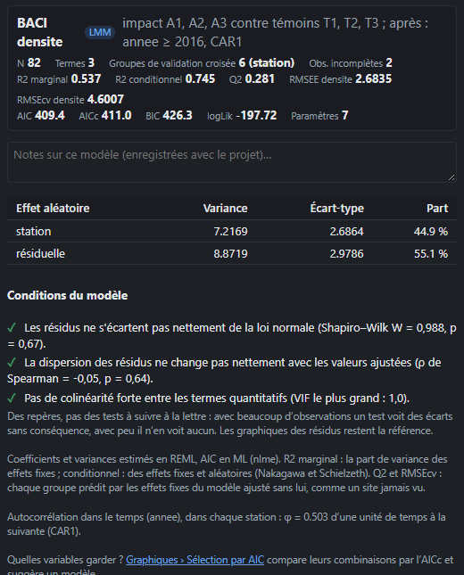
Le résumé se lit de haut en bas :
- 82 observations (2 sans densité laissées de côté) ;
- R² marginal 0,54 (la part de variance des effets fixes), R² conditionnel 0,74 (avec les différences entre stations) ;
- Q² 0,28 : la validation croisée prédit chaque station par un modèle ajusté sans elle, par ses seuls effets fixes, comme une station jamais vue. Le niveau propre d'une station nouvelle est inconnu : ce Q² modeste ne dit rien de l'effet BACI ;
- la station porte 45 % de la variance, le reste est résiduel ; φ = 0,50 : la corrélation d'une année à la suivante dans une station.
Les conditions du modèle sont dites en mots, chacune ✓ ou ⚠ avec ce qu'il faut faire. Ici les trois sont bonnes : les résidus ne s'écartent pas nettement de la loi normale (Shapiro–Wilk p = 0,67), leur dispersion ne change pas avec les valeurs ajustées, et les termes ne sont pas colinéaires. Ce sont des repères : les graphiques des résidus (Graphiques › Résidus) restent la référence.
4. Lire l'interaction
Graphiques › Coefficients :

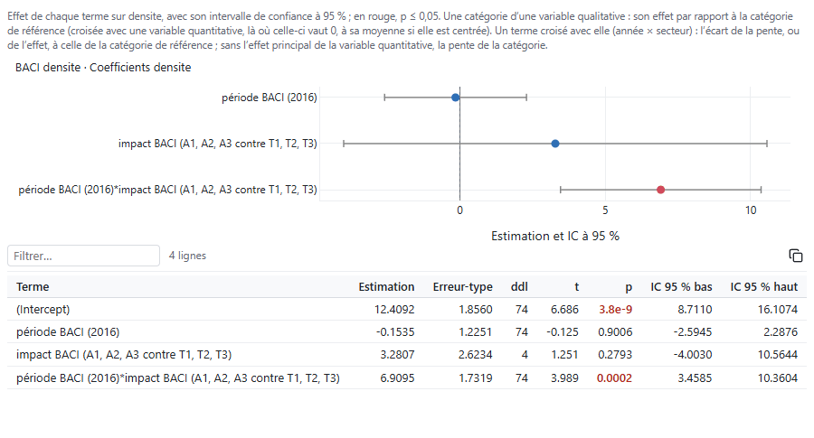

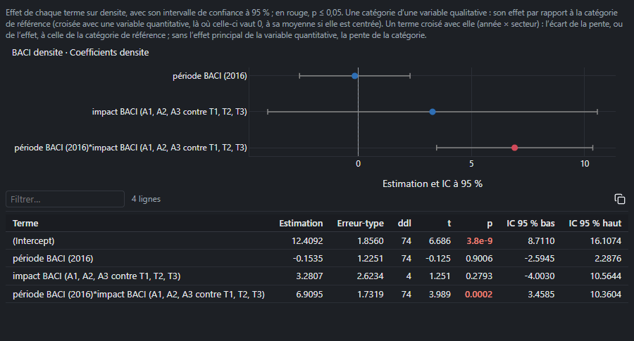
Les deux variables valant 0 ou 1, chaque coefficient a un sens précis :
| Terme | Estimation [IC 95 %] | Ce qu'il mesure |
|---|---|---|
| période BACI (2016) | −0,15 [−2,59 ; 2,29] | le changement chez les témoins après 2016 |
| impact BACI | 3,28 [−4,00 ; 10,56] | l'écart impact − témoins avant 2016 |
| période × impact | 6,91 [3,46 ; 10,36] | l'effet BACI : combien les stations d'impact ont changé de plus que les témoins |
L'effet de l'aménagement est le terme croisé, pas le coefficient de la période ni celui de l'impact pris seuls. Les stations d'amont avaient déjà 3,3 juvéniles de plus que les témoins avant les travaux (un écart non significatif, estimé avec 4 degrés de liberté : il compare des stations) ; comparer l'impact aux témoins après seulement aurait compté cet écart comme un effet. Le terme croisé, lui, compare chaque station à elle-même (74 degrés de liberté). Les données ont été simulées avec un effet de +6 : le modèle l'estime à 6,9.
5. Les moyennes ajustées
Les moyennes ajustées demandent des variables qualitatives. Créez la période avec Édition ›
Nouvelle variable : nom periode, formule ifelse(annee >= 2016, "après", "avant") (un
résultat en texte donne une variable qualitative).

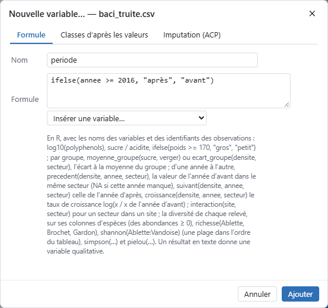

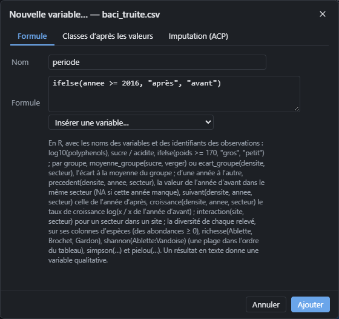
Puis Modèle › Nouveau modèle : type Modèle linéaire mixte, et dans Formule R
densite ~ periode * groupe + (1 | station), puis Appliquer : la réponse, les deux variables,
leur terme croisé et l'effet aléatoire de la station sont réglés. Cochez dans le temps (CAR1)
et choisissez annee. Nommez-le « BACI facteurs » et ajustez : c'est le même modèle, écrit avec
des catégories.

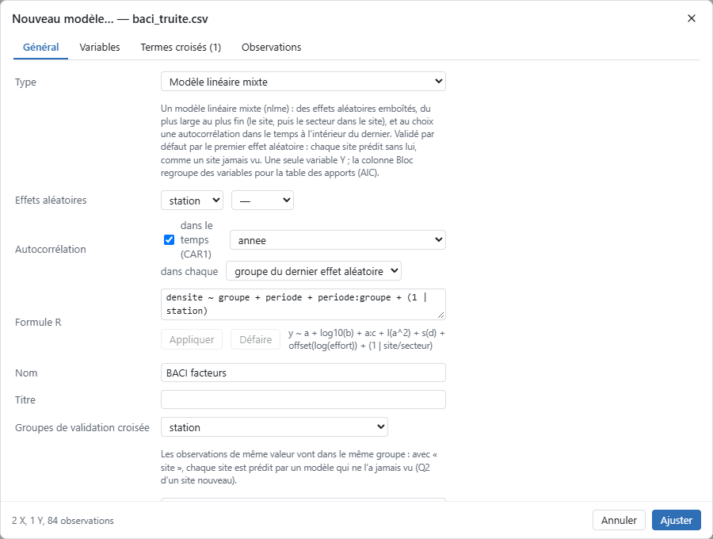

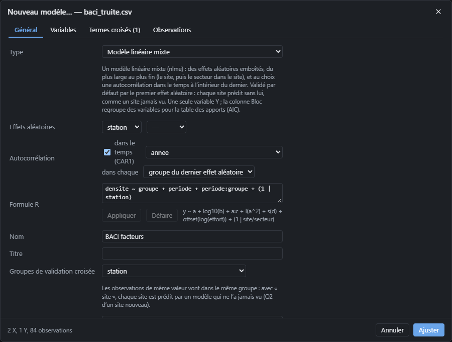
Graphiques › Moyennes ajustées : catégories de periode, dans chaque niveau de groupe.

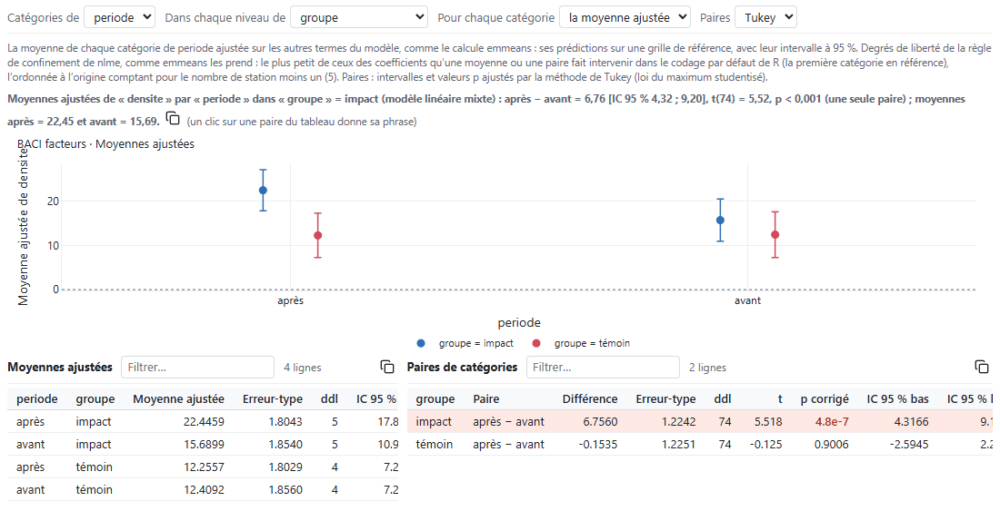

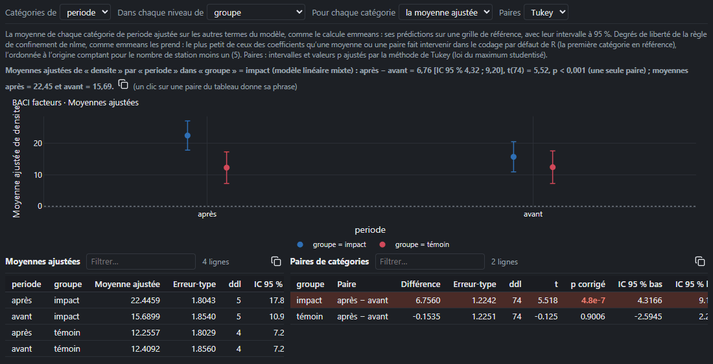
Dans le groupe impact, la densité passe de 15,7 à 22,4 juvéniles pour 100 m² : +6,76 [IC 95 % 4,32 ; 9,20]. Chez les témoins, de 12,4 à 12,3 : −0,15 [−2,59 ; 2,29]. La différence entre ces deux changements, 6,76 − (−0,15) = 6,91, est l'effet BACI du coefficient. Un clic sur une paire du tableau donne sa phrase, à copier pour un rapport.
6. Les textes des méthodes et des résultats
Choisissez le modèle « BACI densite » dans l'explorateur, puis Modèle › Texte pour la section Méthodes : un paragraphe écrit d'après le modèle, en français ou en anglais, avec ses références, puis le texte des résultats.

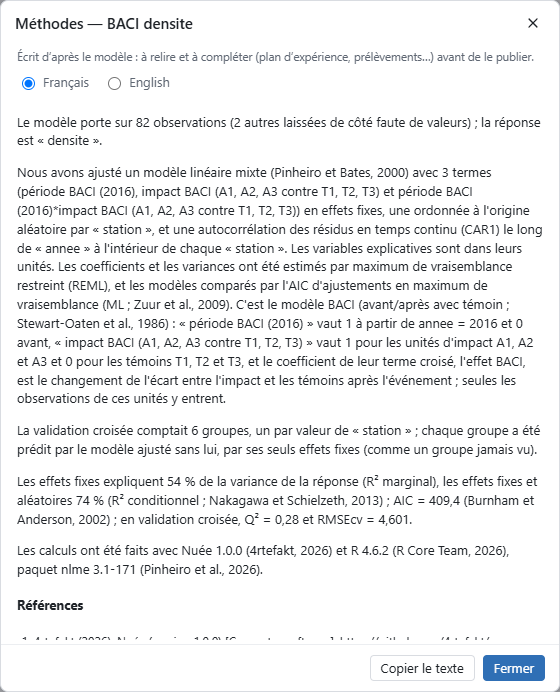

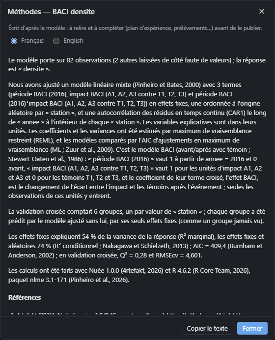
Il dit, entre autres :
C'est le modèle BACI (avant/après avec témoin ; Stewart-Oaten et al., 1986) : « période BACI (2016) » vaut 1 à partir de annee = 2016 et 0 avant, « impact BACI (A1, A2, A3 contre T1, T2, T3) » vaut 1 pour les unités d'impact A1, A2 et A3 et 0 pour les témoins T1, T2 et T3, et le coefficient de leur terme croisé, l'effet BACI, est le changement de l'écart entre l'impact et les témoins après l'événement ; seules les observations de ces unités y entrent.
et pour les résultats :
Coefficients (sur l'échelle du lien) : « période BACI (2016) » : β = -0,153 (IC 95 % [-2,59 ; 2,29], p = 0,9) ; « impact BACI (A1, A2, A3 contre T1, T2, T3) » : β = 3,28 (IC 95 % [-4,00 ; 10,6], p = 0,28) ; « période BACI (2016)*impact BACI (A1, A2, A3 contre T1, T2, T3) » : β = 6,91 (IC 95 % [3,46 ; 10,4], p < 0,001).
Complétez-le avec ce que le modèle ne sait pas : le protocole de pêche, la surface pêchée, les dates. Copier le texte le met dans le presse-papiers.
7. Exporter vers R
Fichier › Exporter vers R écrit un script qui refait le modèle sans Nuée, avec R et son paquet
nlme (livré avec R) : les données, le calcul écrit pour ce modèle (l'ajustement par
nlme::lme() avec nlme::corCAR1(form = ~ annee | station), la validation croisée par
station, les statistiques), puis les tableaux et les graphiques, le tout commenté (environ 250
lignes ici). Au format R Markdown ou Quarto, il devient un rapport avec le texte des méthodes.

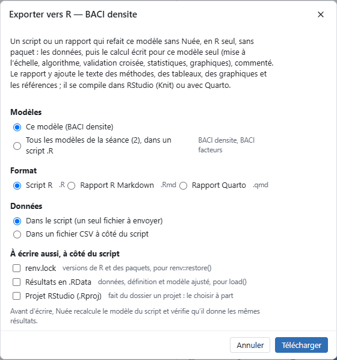

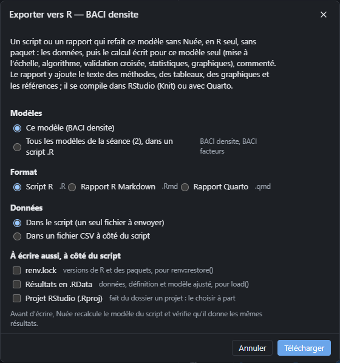
Avant d'écrire, Nuée refait le modèle avec le script et vérifie qu'il donne les mêmes résultats. Dans l'application de bureau, le bouton s'appelle Choisir l'emplacement… ; la capture vient de la version navigateur, où il télécharge les fichiers.
Pour aller plus loin
- Graphiques › Autocorrélation des résidus montre l'autocorrélation qui reste d'une année à l'autre ; la comparaison des modèles avec et sans CAR1 se fait par l'AIC (Prédiction › Comparer les modèles).
- Le guide : les tests statistiques et le mode BACI, les modèles mixtes, leurs conditions et les moyennes ajustées, l'export vers R.